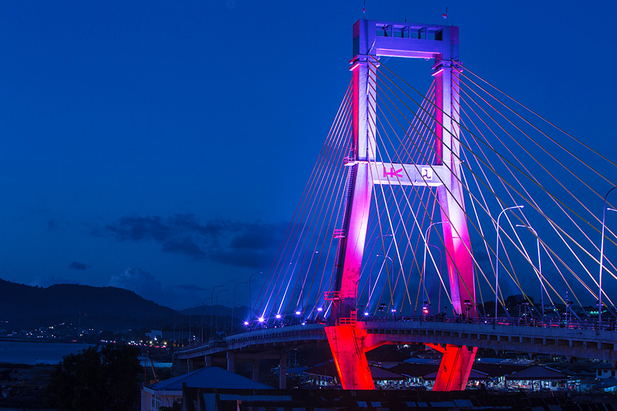
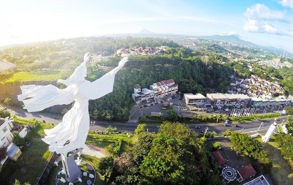

Welcome....
Manado atau Menado adalah ibu kota dari provinsi Sulawesi Utara, Indonesia. Kota Manado memiliki 11 kecamatan serta 87 kelurahan dan desa.
Kota Manado
Jembatan Soekarno

Jembatan Ir. Soekarno di Manado, Sulawesi Utara telah diresmikan pada Mei 2015, setelah sempat terbengkalai 12 tahun. Jembatan sepanjang 1,127 km dan menelan biaya Rp 300 miliar ini punya pemandangan indah bila Anda berada di atasnya. Baca artikel detikfinance, "Punya Panjang 1.127 Meter, Jembatan Soekarno Jadi Ikon Baru Manado"
Pusat Kota Manado

Kota Manado memiliki jumlah penduduk di Manado diperkirakan (berdasarkan Januari 2014) adalah 430.790 jiwa dan bertambah menjadi 478.192 jiwa per tanggal 30 Juni 2023, berdasarkan data Kementerian Dalam Negeri tahun 2023, dengan kepadatan 2.934 jiwa/km2. Julukan: Kota Tinutuan. Kota Seribu Satu Gereja.
Patung Tuhan Yesus Memberkati

Menggabungkan kebutuhan kota untuk perumahan dan peningkatan tempat wisata, Ciputra Group mengembangkan kompleks ini dengan state-of- the-art- features. Diantaranya patung Tuhan Yesus Memberkati yang sekarang sudah menjadi icon dari kota Manado.